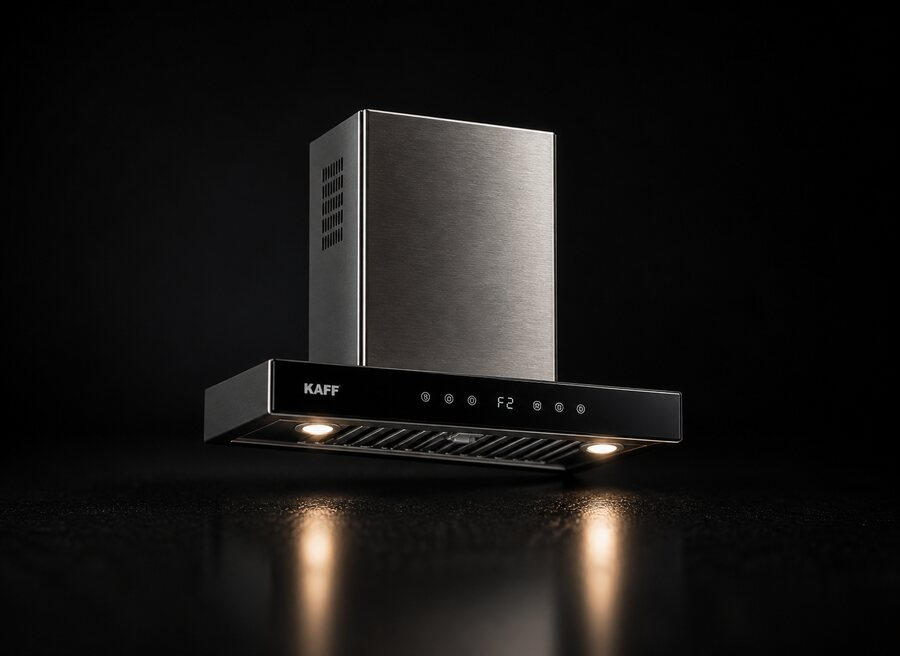
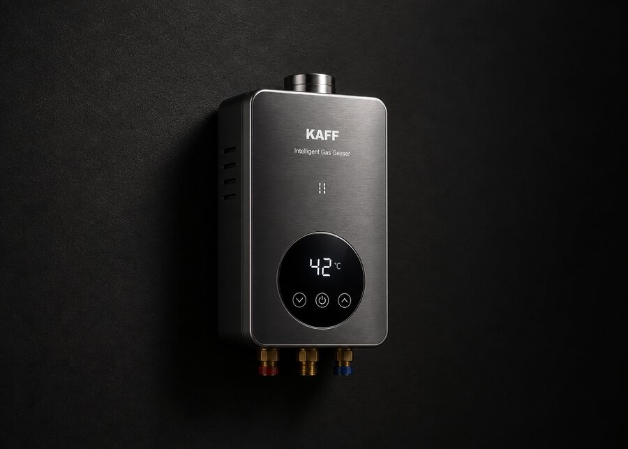

Our Gas & Appliance Repair Services
Reliable, safe, and fast repair services to keep your home appliances working perfectly.

Chimney Repair Service
Professional kitchen chimney repair to maintain proper airflow and smoke removal.
We provide deep cleaning and technical repair to improve suction and performance.
- ✔ Motor repair & replacement
- ✔ Deep cleaning service
- ✔ Suction power fixing
Out-of-Warranty Service | ₹149 Visiting Charge

Gas Geyser Repair
Quick and safe repair service for all types of gas geysers.
Ensure consistent hot water supply with our expert maintenance and repair solutions.
- ✔ Ignition repair
- ✔ Gas leakage fixing
- ✔ Heating issue repair
Out-of-Warranty Service | ₹149 Visiting Charge

Gas Repair Service
Complete gas appliance repair with safety-first approach.
Our trained technicians ensure leak-free and efficient gas system performance.
- ✔ Gas leakage detection
- ✔ Pipe & regulator repair
- ✔ Safety inspection
Out-of-Warranty Service | ₹149 Visiting Charge